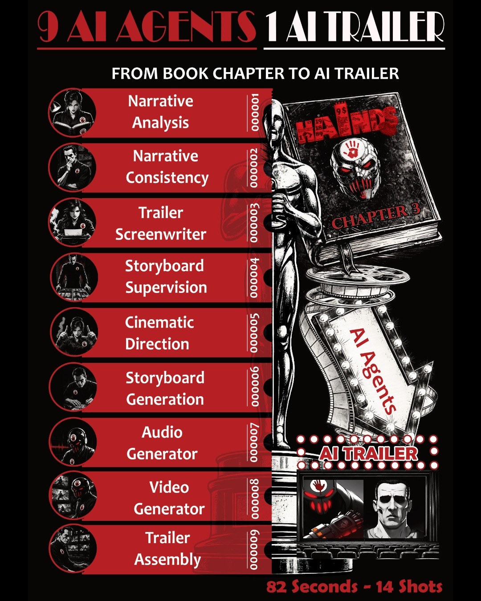
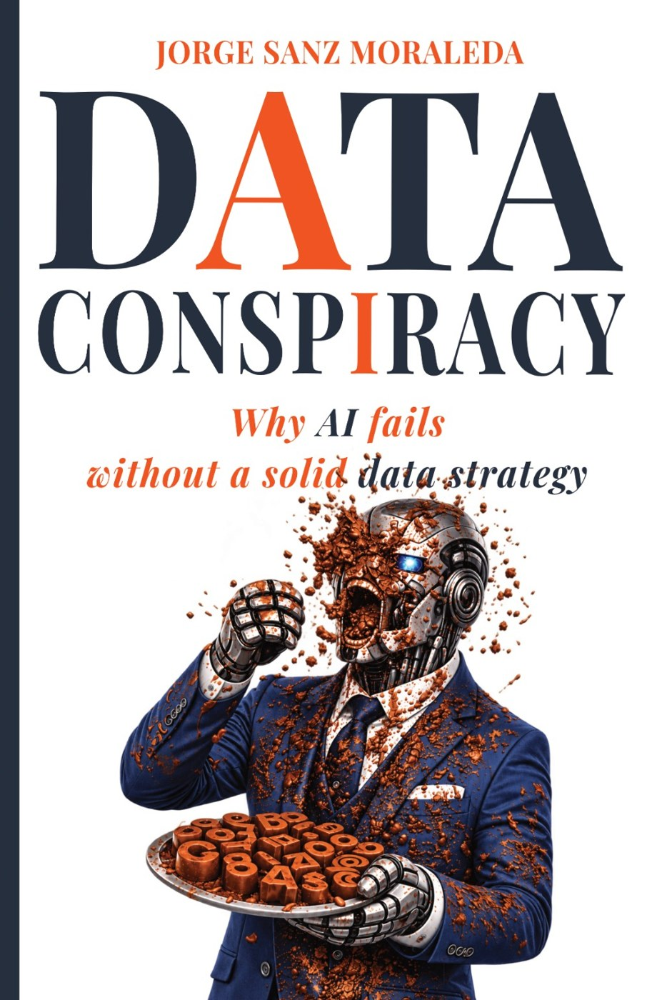
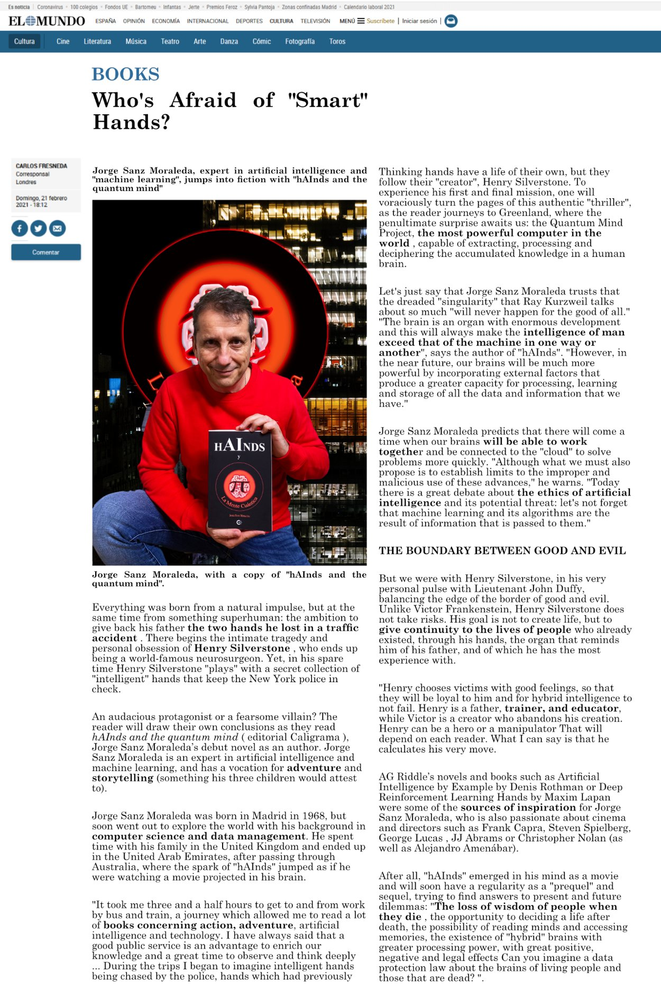

Enterprise Transformation
Led and delivered multi-million-dollar data, AI, BI and analytics programs; developed data strategies, operating models, RFPs and platform roadmaps.
Senior executive advisor in data governance, enterprise data management, advanced analytics and artificial intelligence. Experience delivering multi-million-dollar transformation programs across MENA, Australia, the UK and Europe.
Explore Executive ExperienceWatch AI ResearchBuilding data capabilities that connect enterprise strategy, operating models, governance, platforms and measurable business outcomes.
Led and delivered multi-million-dollar data, AI, BI and analytics programs; developed data strategies, operating models, RFPs and platform roadmaps.
Built capabilities spanning data quality, catalog, architecture, modeling, security, regulatory compliance and enterprise data management.
Established analytics and data management capabilities for organizations across the UAE, Australia, the UK and Spain, leading multinational onshore and offshore teams.
An automated multi-agent pipeline designed to transform narrative source material into a cinematic trailer, integrating language understanding, storyboarding, visual generation, audio and quality control.
Watch the public Chapter 3 trailer produced through the applied AI research workflow. Open on YouTube.

The pipeline combines narrative extraction and consistency validation, trailer scriptwriting, storyboard supervision, cinematic direction, storyboard generation, audio and video synthesis, and final assembly. The implementation uses LLMs, RAG, Python and diffusion-based video generation with automated quality checks. The supplied architecture graphic illustrates the nine-agent production flow.
Research demonstration: HAINDS and the Quantum Mind, Chapter 3. The poster describes a 14-shot, 82-second trailer; the published YouTube video is approximately 1:27.
RAG, narrative extraction and validation, trailer scriptwriting, storyboarding and cinematic direction.
Diffusion-based video generation, shot orchestration, audio production and final montage.
Automated narrative and visual validation, continuity checks and quality reporting across the production workflow.
Additional applied work includes 21 AI projects across machine learning, neural networks, computer vision, NLP, reasoning and automatic planning.

Why AI fails without a solid data strategy. A story about a chocolate empire, two competing successors and the strategic difference between investing in AI tools and building trustworthy data foundations.
View on AmazonLa importancia de la estrategia del dato en la inteligencia artificial y en los negocios. The Spanish-language edition of the data strategy story.
Purchase link to be added when confirmed.
A science-fiction thriller exploring technology, identity, memory and the quantum mind. Published in English by Austin Macauley Publishers in 2024.
Watch the AI TrailerThe Spanish-language edition of HAINDS, a science-fiction thriller exploring artificial intelligence, human ambition and the quantum mind.
Spanish-language edition · Original book cover
Discover the world of HAINDS in this promotional video, separate from the AI research trailer presented above.
Speaking engagements include the United Nations World Data Forum, UAE Artificial Intelligence Week and Abu Dhabi Knowledge Day.
Press coverage exploring the intersection of artificial intelligence, human intelligence, and speculative fiction.

An EL MUNDO feature on Jorge Sanz Moraleda's novel HAINDS and the Quantum Mind and its ideas about machine learning, the boundary between human and machine intelligence, and the ethical implications of emerging technologies.
The article also explores the book's protagonist, Henry Silverstone, and the author's international background in data and artificial intelligence.
Where technology, imagination and the human mind meet.
The original article is reproduced here as a supplied image for portfolio reference. A verified online article link can be added later.
View Article ImageMaster’s Studies in Artificial Intelligence
Universidad Internacional de La Rioja (UNIR), 2025–2026
DAMA CDMP — Master Level
2022
MBA
Polytechnic University of Madrid, 1999–2000
Degree in Statistics
1987–1992
AI & ML: Python, R, MATLAB, KNIME; LLM and agent workflows: OpenAI, LangChain, Claude, ChromaDB, RAG; Cloud: Azure AI and Data Lake; Data platforms: Informatica, Dataiku, Cloudera, Spark; Analytics: Power BI, Hyperion.
Industry experience: Energy, Financial Services, Government, Telecommunications and Retail.
Open to conversations about enterprise data strategy, governance, AI transformation, advisory work and executive leadership opportunities.
Connect on LinkedIn